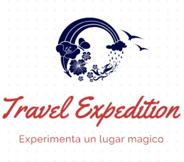

Sobre Nosotros
Somos una empresa de turismo que ofrece los mejores servicios del país, fomentando la responsabilidad con nuestros clientes.

Somos una empresa de turismo que ofrece los mejores servicios del país, fomentando la responsabilidad con nuestros clientes.
La oferta turística que ofrecemos abarca tours de playa, montaña, arqueología, caminatas, campamentos, cultura, aventura,
ecoturismo, turismo rural, necro turismo, city tours, entre otros; servicio de transporte, traslados al aeropuerto, guías
turísticos calificados en diferentes idiomas: español, francés, inglés, y portugués, reservación de hoteles, renta de autos,
paquetes de luna de miel, team building, viajes de negocios y convenciones, turismo de salud y seguros de viaje.
El objetivo y compromiso de El Salvador Expedition, es lograr la satisfacción de nuestros clientes a través de nuestro
servicio, calidad, responsabilidad y profesionalismos.
Le invitamos a que viva la mejor de sus experiencias de viajes con El Salvador Expedition.
Ser el complejo turístico líder en la región de Colonia Escalón San Salvador, que garantice experiencias inolvidables a sus visitantes en las áreas de descanso, recreación y aventura. Siempre estar comprometidos en la protección y conservación del medio ambiente e instruir a nuestros visitantes para que ellos también ayuden en la conservación del mismo. Satisfacer todas las necesidades del cliente y contribuir al desarrollo turístico y económico de la región.
Satisfacer las necesidades de recreación del turismo interno y externo del El Salvador, también se ha enfocado en la conservación y protección del medio ambiente. El centro turístico ofrece a los visitantes un lugar rodeado de naturaleza, en donde las actividades de descanso, convivencia y aventura son aptas para todas las edades ya que contamos con una gran diversidad de actividades las cuales pueden ser disfrutadas en ambientes agradables y en contacto de la naturaleza.

-Cooperación
-Respeto
-Responsabilidad Social
y Ambiental
-Compromiso
-Excelencia
-Integridad
-Solidaridad